Steward
分享是一種喜悅、更是一種幸福
微處理器 - MediaTek MT7688 (LinkIt Smart 7688 Duo) - Assembly - LED
橘色LED位於WLED_N
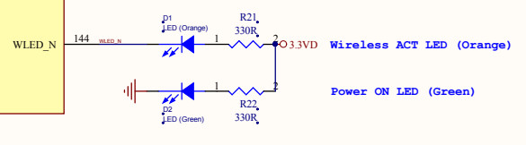
MT7688AN的WLED_N是GPIO-44
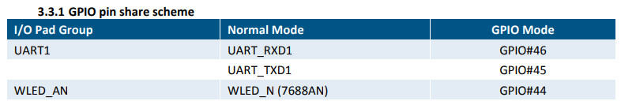
WLED_N腳位可以配置成一般GPIO使用
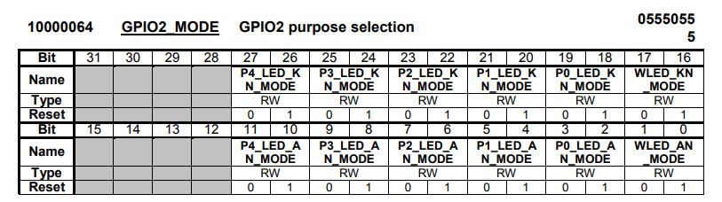
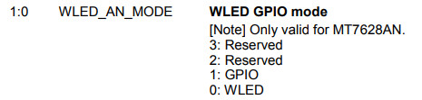
GPIO方向設定
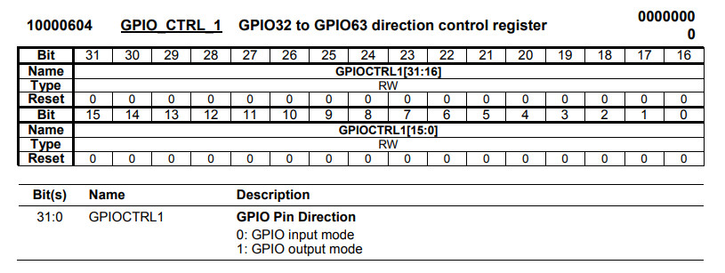
GPIO資料
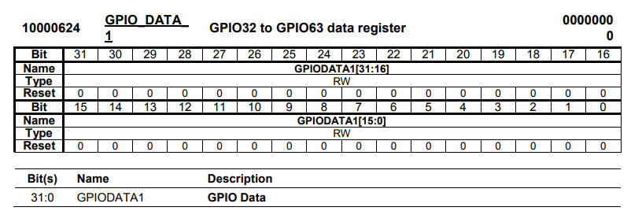
main.s
.extern _start
.set noreorder
.text
_start:
b reset
.org 0x400
reset:
li $8, 0xb0000604
li $9, 0xffffffff
sw $9, 0($8)
loop:
li $8, 0xb0000624
li $9, 0xffffffff
sw $9, 0($8)
li $8, 5000
0:
addi $8, $8, -1
bnez $8, 0b
nop
li $8, 0xb0000624
li $9, 0x00000000
sw $9, 0($8)
li $8, 5000
0:
addi $8, $8, -1
bnez $8, 0b
nop
b loop
nop
main.ld
OUTPUT_FORMAT("elf32-tradlittlemips", "elf32-tradbigmips", "elf32-tradlittlemips")
OUTPUT_ARCH(mips)
ENTRY(_start)
SECTIONS {
. = 0x00000000;
.text : { *(.text) }
.data : { *(.data) }
.bss : { *(.bss) }
}
Makefile
all: mipsel-linux-as -o main.o main.s mipsel-linux-ld -T main.ld -o main.elf main.o mipsel-linux-objcopy -O binary main.elf main.bin clean: rm -rf main.bin main.o main.elf
編譯
$ export PATH=$PATH:/opt/buildroot-gcc342/bin/
$ make
mipsel-linux-as -o main.o main.s
mipsel-linux-ld -T main.ld -o main.elf main.o
mipsel-linux-objcopy -O binary main.elf main.bin
開發板
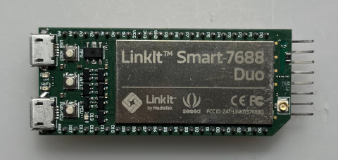
CH341A燒錄器，第一腳位位置如下：
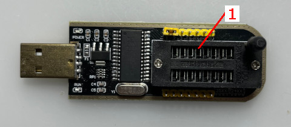
連接SPI腳位
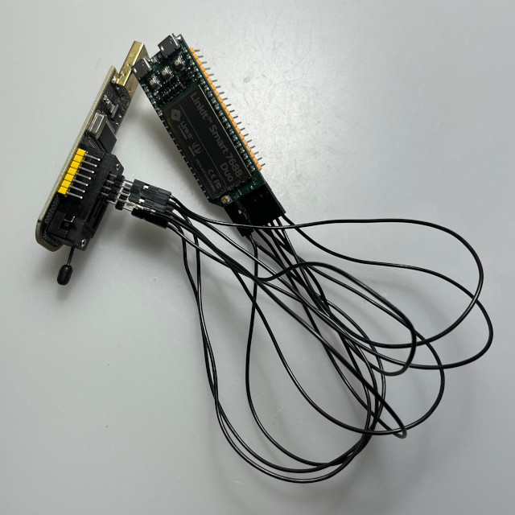
開啟NeoProgrammer
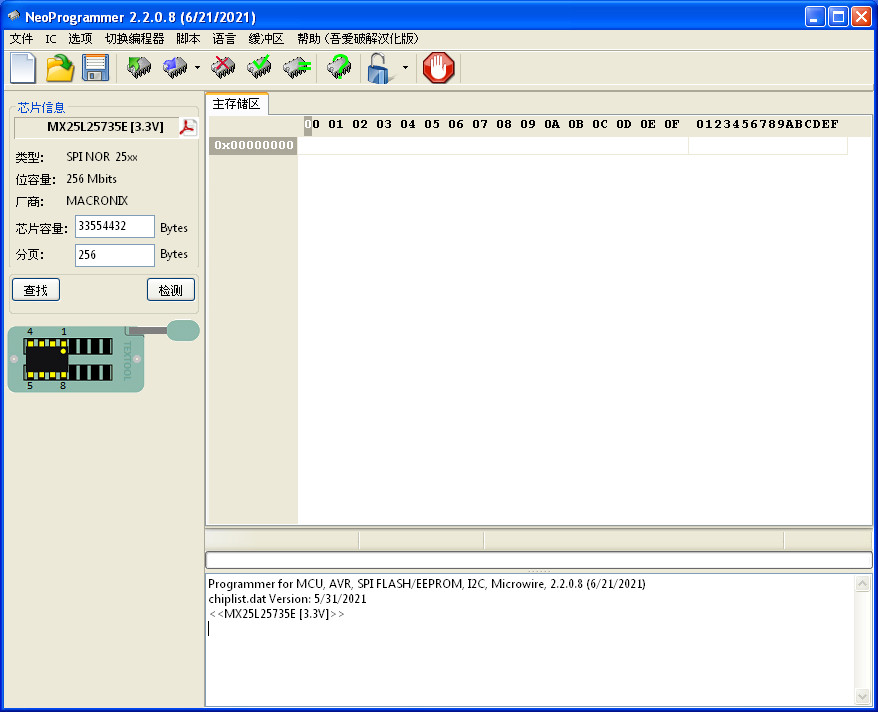
按住MPU Reset按鍵不放
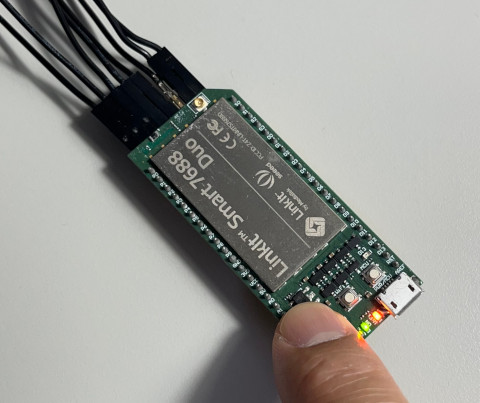
按下檢測按鈕，選擇MX25L25735E，接著按下選擇IC按鈕
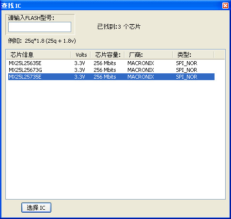
按下Ctrl + O並且載入main.bin
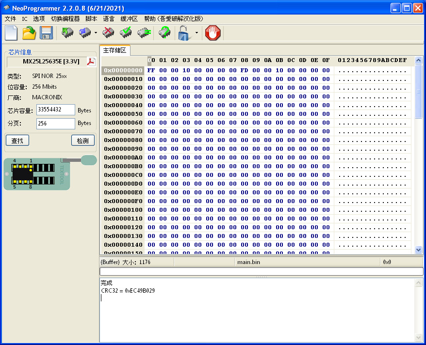
記得將清空選項打勾
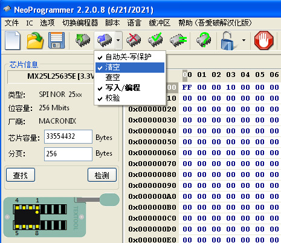
按下燒錄按鈕並且鬆開MPU Reset
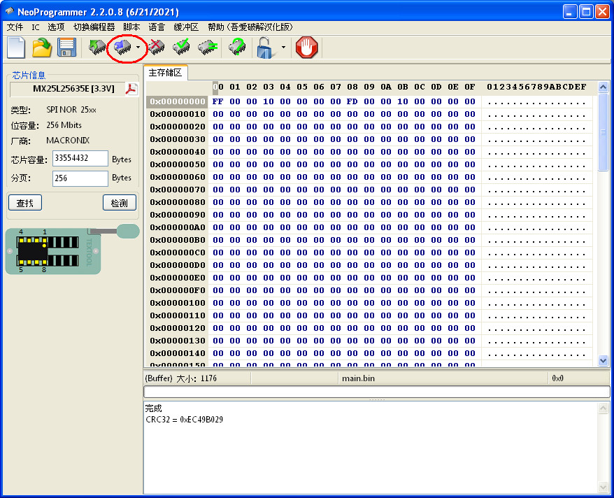
燒錄中
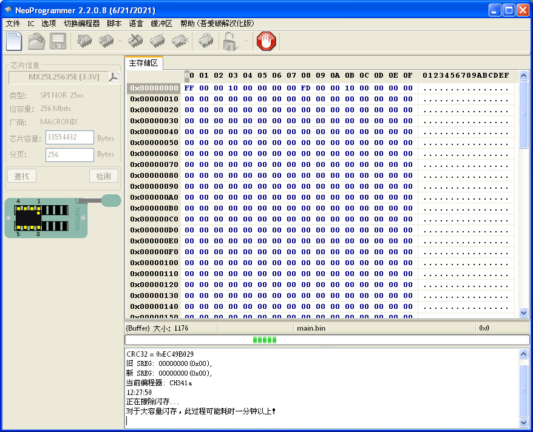
完成
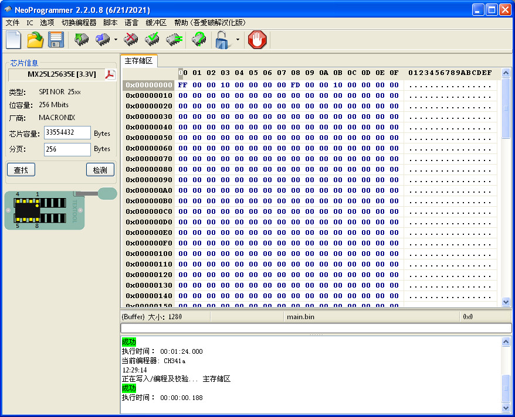
接著重新上電源即可
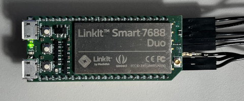
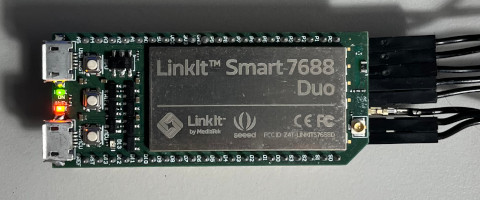